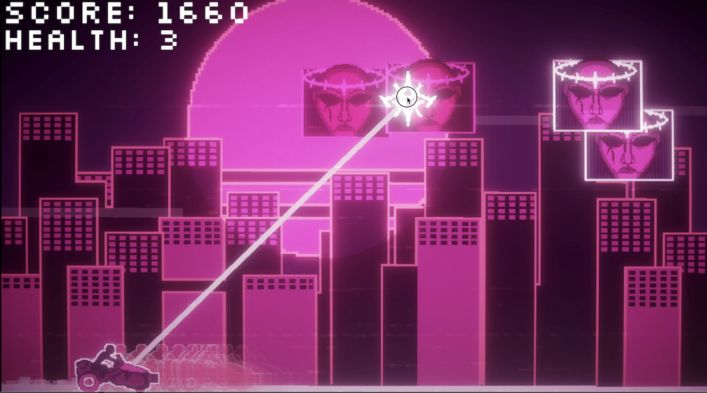
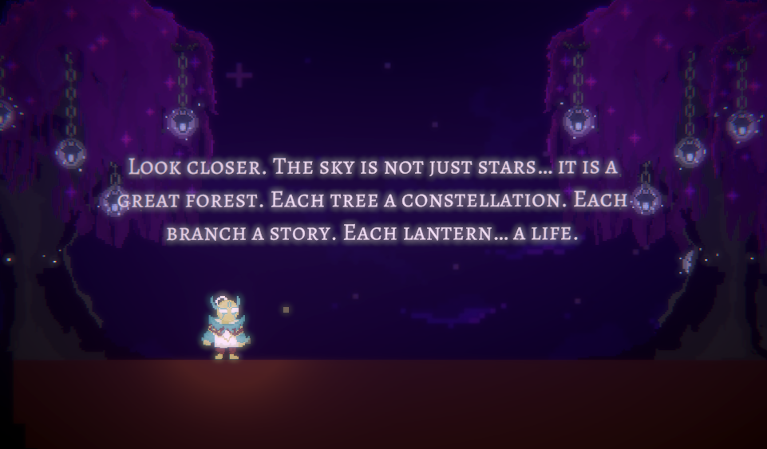
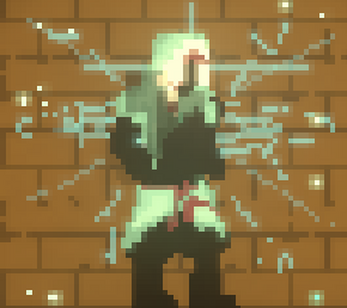
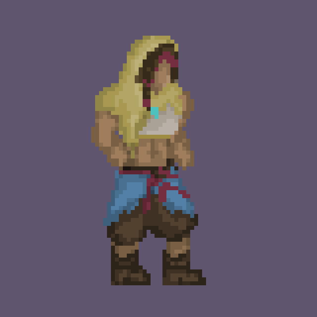
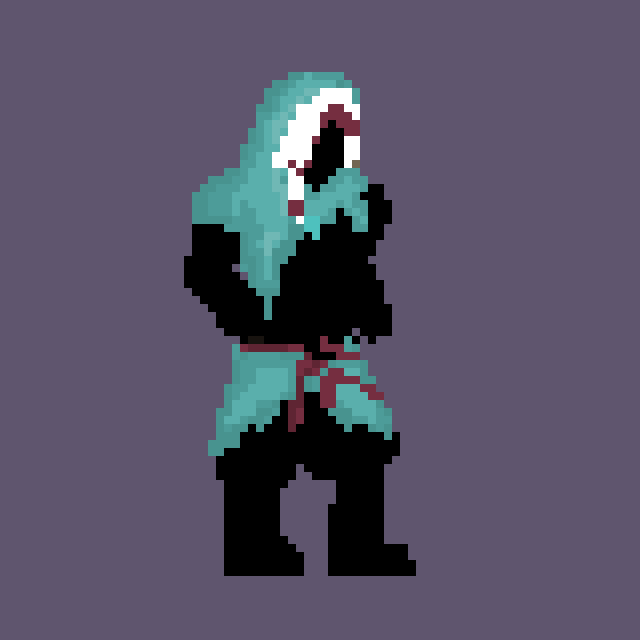

01
DAY 1
aaaaa
UniJam Summer 2026
Echoes Of The Ancient was created for UniJam Summer 2026. This page documents the finished game and the development process behind it, from the original concept through implementation, iteration, and polish.



Echoes Of The Ancient was developed solo over the course of one week for a game jam. I handled the programming, art, music, and visual effects, working to create a complete gameplay experience within a limited development timeframe.
The main concept behind the game was built around the idea of time. I wanted to create a mechanic that made time an important part of the player's interactions and how they experienced the game, rather than simply being part of the setting.
As a solo developer, I was responsible for every aspect of the project, including gameplay programming, visual art, music, visual effects, and overall implementation. The short development period pushed me to focus on the core time-based mechanic while iterating quickly to create a cohesive and engaging experience.
aaaaa
mkasdklasdklsda
asklmdaklmsdlmk
WOWOWOWOW
AKMSDMLASLMKD
asklmdaklmsdlmk
asklmdaklmsdlmk
The visual development of Echoes Of The Ancient evolved alongside the gameplay. Early visual work helped establish the game's atmosphere and provided a foundation for the final presentation.


Explain the major technical systems that were implemented for the project. This is a good place to discuss programming decisions, gameplay systems, tools, and any technical problems that had to be solved during the jam.
Focus on the parts of development that best demonstrate your skills and problem-solving process rather than documenting every individual implementation detail.
Describe how the game changed during development. Include examples of mechanics, visuals, or systems that were adjusted after testing.
Explain what feedback revealed about the player experience and how those observations influenced the final version of the game.
Echoes Of The Ancient was completed as part of UniJam Summer 2026 and received 3rd Place in the Fun & Entertainment category.
Reflect on how the completed game compares to the original concept, what you learned during development, and which parts of the project you are most proud of.